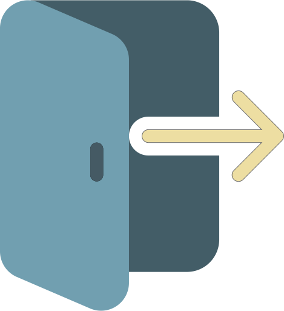

<mat-toolbar>
  <a mat-button mat-button-base [routerLink]="['/']" class="navbar-brand">
    
    <span>Chat App</span>
  </a>

  <span class="spacer"></span>


  <button *ngIf="userDataService.user$ | async"  mat-button [mat-menu-trigger-for]="userMenu" class="login-user"
    [title]="(userDataService.user$ | async)?.nickName" >
    <button mat-icon-button class="example-icon favorite-icon" aria-label="Example icon-button with heart icon">
      <mat-icon>account_circle</mat-icon>
    </button>
    <span class="user-name">{{(userDataService.user$ | async)?.nickName}}</span>
  </button>
  <button mat-icon-button [title]="isFullScreen ? 'Exit Full Screen' : 'Enter Full Screen'" (click)="fullScreenClicked()"
          class="example-icon favorite-icon" aria-label="full screen">
    <mat-icon>{{isFullScreen ? 'fullscreen_exit' : 'fullscreen'}}</mat-icon>
  </button>
  <!-- <button mat-button class="login-user"  *ngIf="userDataService.user$ | async" 
    [mat-menu-trigger-for]="userMenu" aria-label="Example icon-button with share icon">
    {{(userDataService.user$ | async)?.nickName}}
  </button> -->
</mat-toolbar>

<mat-menu #userMenu="matMenu" class="mat-menu-class">
  <button (click)="logout()" mat-menu-item>
    
    Log Out
  </button>
</mat-menu>
